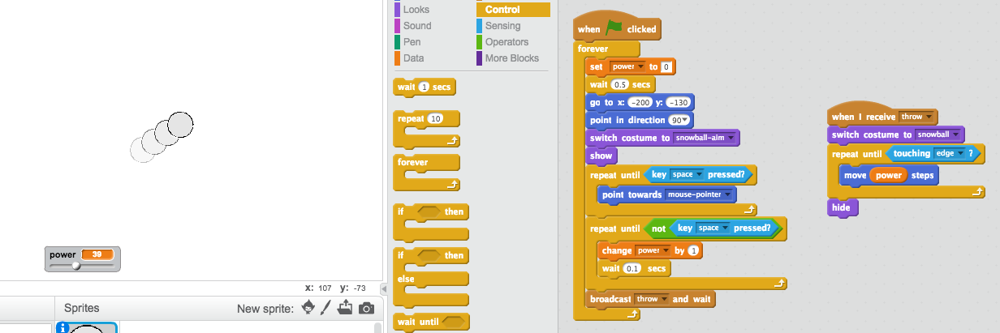

In this project you’re going to make a game in which you have to throw snowballs at a target. You’ll use the mouse pointer to angle the snowball and the spacebar to choose the snowball’s power.
Let’s make a snowball, that you can throw around your stage.
Activity Checklist
Start a new project, and delete the cat sprite, so that your project is empty.
For this project, you should have a ‘Resources’ folder, containing the snowball sprite that you’ll need. Make sure that you can find this folder, and ask your club leader if you can’t find it.
screenshot
Click ‘Upload sprite from file’, and select the file ‘Snowball.sprite2’ in your resources folder.
screenshot
The sprite contains 2 costumes, a normal costume, and one that shows which direction the snowball is facing.
screenshot
First, let’s allow the player to change the angle of the snowball. Add this code to your snowball sprite:
when flag clicked
wait (0.5) secs
go to x:(-200) y:(-130)
point in direction (90 v)
switch costume to [snowball-aim v]
repeat until <key [space v] pressed?>
point towards [mouse-pointer v]
end
Test out your project by clicking the green flag. You should see that your snowball follows the mouse, until you press the space bar.
screenshot
Let’s also allow the player to deicde on how powerful the snowball should be thrown. Create a new variable called power.
screenshot
Drag your new variable display to the bottom of the stage, near the snowball. Right-click on the variable display and click ‘slider’.
screenshot
Add code to set your new power variable to 0 when the flag is clicked.
set [power v] to (0)
Now that you have a power variable, you can increase the power of the snowball after the direction has been chosen with this code:
repeat until < not <key [space v] pressed?> >
change [power v] by (1)
wait (0.1) secs
end
This code means that you have to keep the space bar held down after choosing the direction, to choose the snowball’s power.
Test your snowball, to see if you can choose its angle and power.
screenshot
Step 2: Throwing a snowball
Activity Checklist
Add this code to the end of your snowball script, to broadcast that you’re throwing a snowball:
broadcast [throw v] and wait
Here’s how your snowball code should look:
when flag clicked
wait (0.5) secs
go to x:(-200) y:(-130)
point in direction (90 v)
switch costume to [snowball-aim v]
repeat until <key [space v] pressed?>
point towards [mouse-pointer v]
end
repeat until < not <key [space v] pressed?> >
change [power v] by (1)
wait (0.1) secs
end
broadcast [throw v] and wait
Add this script to your snowball, to move until it reaches the edge of the stage:
when I receive [throw v]
switch costume to [snowball v]
repeat until < touching [edge v]? >
move (power) steps
end
hide
The script uses the power variable to decide how fast to move.
Now that you’re hiding the snowball when it touches the edge, add code to show the snowball when the flag is clicked, just after the snowball switches to the snowball-aim costume.
screenshot
Test out your snowball a few times. Does it move at different angles and different speeds?
If you want to be able to throw your snowball lots of times, just add a forever loop around your snowball when flag clicked code.
screenshot
Step 3: Realistic movement
You now have a snowball, but let’s make it move a bit more realistically.
Activity Checklist
First, let’s set a maximum power level, so that the snowball can’t be thrown too hard.
In your snowball’s when flag clicked code, we need to increase the power only if it’s less than 20. Change your code to:
repeat until< not <key [space v] pressed?> >
if < (power) < [20] > then
change [power v] by (1)
wait (0.1) secs
end
end
Test out your snowball again, and you’ll see that the power never gets above 20.
Now that your snowball’s maximum power is 20, you can set this as the maximum value for the variable’s slider too. Right-click on your power variable, and click ‘set slider min and max’.
screenshot
You can also slow down the snowball, by reducing the power slightly as it flies through the air. Add this code block to your snowball’s when I receive [throw] code:
change [power v] by (-0.25)
Test this new code - does it work as you expected? You may notice that the power keeps reducing, and eventually the snowball moves backwards!
To fix this, you can add an if block to your code, so that the power is only lowered if it is above 0:
if < (power) > (0) > then
change [power v] by (-0.25)
end
You’re nearly there, but you also need to add some gravity to your snowball, so that it falls to the ground. You can add gravity by just moving the snowball down continuously with this script:
when I receive [throw v]
repeat until <touching [edge v]?>
change y by (-5)
end
Test out your snowball again, and you should see that your snowball moves much more realistically.
Step 4: The target
Let’s add in a target for your snowballs!
Activity Checklist
Add in another sprite to your project.
screenshot
Add this code to your new sprite, so that it says “You got me!” when it gets hit:
when flag clicked
forever
if < touching [snowball v]? > then
say [You got me!] for (1) secs
end
end
Test out your new code.
screenshot
Let’s do a couple of things to make the game harder. First, let’s move the bear each time the player throws the snowball.
To do this, first add a broadcast to your snowball, near the top of your forever loop. This will let your bear know that a new shot is about to be taken.
broadcast [new shot v]
When your bear receives this message, move it to a new random position with this code:
when I receive [new shot v]
set x to (pick random (0) to (200))
Test your project by throwing a few snowballs. Does your bear move position each time?
You can also make your game harder by adding a rock in front of your snowball.
screenshot
You can now change your snowball code, to stop when it touches the edge of the screen or when it touches the rock. Here’s how your snowball code should look:
screenshot
Finally, you can make your game harder by making your snowball and your bear smaller.
screenshot
Challenge: Improve this game!
Now that you’ve made the basic game, see what you can do to improve it. Here are some ideas, but feel free to use your own ideas too.
Change the numbers in your code, to make the snowball move faster, higher or further;
Change the graphics;
Add music and sound effects;
Change sprite costumes when the target is hit;
Add a score and a high score;
The bear could move around so that it’s harder to hit;
You could add snowflakes or birds that stop the snowball;
You could add a second player, so that you could both throw snowballs at the bear… or eachother!